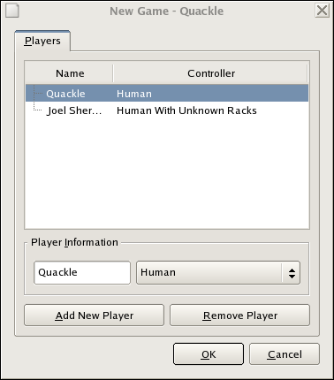

Toronto Operator Notes
by Jason Katz-Brown
|
Toronto Operator Notesby Jason Katz-Brown |
Here are the key steps to operate Quackle against a human opponenent in a real-life game.
Choose "Move–>New game..." from the main menu. Set up the new game with one "Human With Unknown Racks" player and one "Human". The Human Player should be named "Quackle" and the Human With Unknown Racks player should be named whatever your human opponent is named. So if you are operating Quackle against Joel Sherman, make the New Game dialog look like this:
After clicking "OK" to start the new game, Quackle may assign the wrong player to go first. If Joel Sherman begins the game in real life, but Quackle has the Quackle player going first, simply start a new game. In this new game Joel will go first.
After the human makes his or her play, say "Hold", then type the word he or she plays on to the board and press a "Commit" button. (There are two of them. They are functionally almost identical.) If Quackle tells you that the play forms an unacceptable word, say "Challenge!". Otherwise, say "Quackle accepts the play". If the human exchanges 5 tiles, type "exchange 5" into the line-entry that is labeled "Move: '<position> <word>' or 'exchange <tiles> or 'exchange <number>'" and press a commit button. If the human passes, select "Move–>Pass" from the main menu then press a commit button.
When it is Quackle's turn, draw real-life tiles and then tell Quackle what tiles you have drawn. First select all of the text in the line-entry next to the label "Quackle's rack" (right below the board). Next type the seven letters that you now have on the rack in front of you into this line-entry so the line entry contains exactly the seven tiles you hold. Then press "Set rack". Now press "Ask Toronto Player for choices" on the toolbar exactly once. You should see a progress bar appear in the bottom-right corner of the Quackle window that shows how far Quackle is in its decision process. When this progress bar reaches 100% it will disappear and the generated moves will appear in the Choices tab to the left of the board. Select the topmost play and press a commit button. Now put the committed play onto the real-life board, announce its score, and hit your clock.
Quackle will choose its moves in
IMPORTANT! If the human opponent passes and the board is empty, bypass asking Toronto Player for choices and choose "Move–>Pass" from the main menu, then press a commit button.
If your human opponent overdraws, choose "Move–>Handle overdraw..." from the main menu. Turn over X + 2 tiles faceup as per the rules then enter the tiles you have turned faceup into the dialog box and press OK. Then follow Quackle's instruction regarding which tiles to put in the bag.
When the game is over, choose "Game–>Save as" from the main menu and save the game to a .gcg file named like "Toronto-Sherman-Quackle.gcg" or just "Sherman.gcg" or whatever you will find easy to collate at the end of the tournament. Please save these gcg files and email them to jasonkb@mit.edu or olaughlin@gmail.com after the tournament!
Thank you very much and don't hesitate to ask me or John O'Laughlin if you have any questions.
—Jason
Copyright (C) 2005-2006 Jason Katz-Brown and John O'Laughlin.